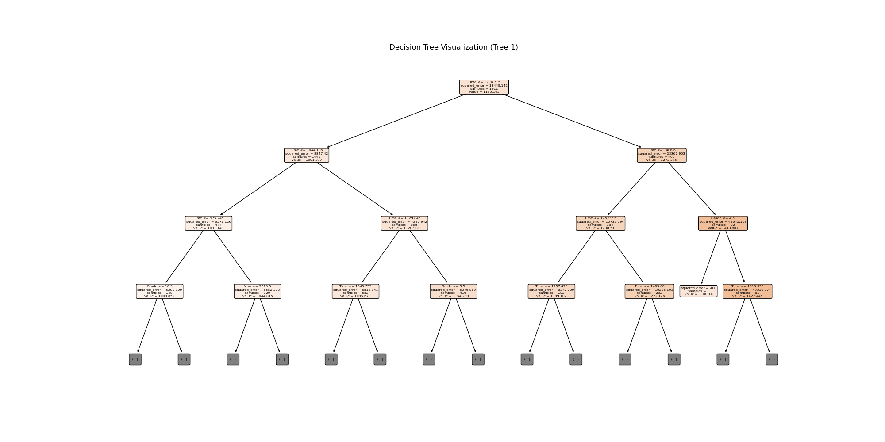
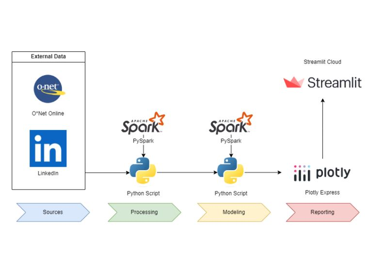

XC Team Ranking Prediction

Random-Forest model to predict rankings of 55 teams based on individual-level performance. Best model achieved % accuracy.
Technologies: Python, SciKit-Learn, Pandas
O*NET-LinkedIn Occupation Classifications

Analytics tool for viewing skill requirements sourced from LinkedIn using O*NET occupation classifications
Technologies: Python, PySpark, Streamlit
Time-lapse of NYC Taxi Zones, 2018-2022

Dynamic time-lapse video showing change in demand for Yellow Taxis in NYC across all NYC TLC zones from 2018-2022
Technologies: Python, Folium, MoviePy, Selenium
Store Locator Web Scraper

Web scraper that aggregates and standardizes store locator data using string matching techniques
Technologies: Python, BeautifulSoup, Fuzzywuzzy
Walmart Proximity Analysis

Explores the proximity of the US population to all Walmart locations, integrating geospatial and statistical analysis
Technologies: Python, Tableau, GeoPy, BeautifulSoup